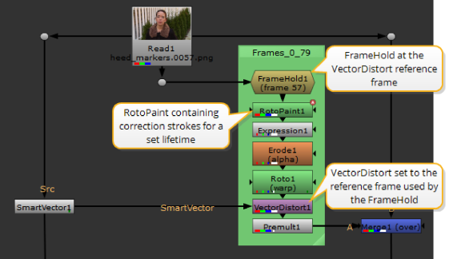
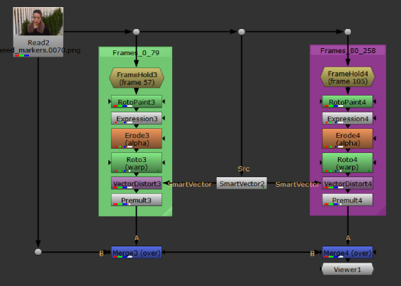

一些序列涉及运动和细节，不能从单个帧校正中传播。在这些情况下，可以使用具有不同参考帧的多个矢量扭曲节点来最小化所需的校正工作量。
| 1。 | 按照中所述设置第一次油漆校正 向源添加油漆 和 将运动向量应用于源 . |
| 2. | 在矢量扭曲节点的属性中，禁用 保持框架 控制。 |
| 3. | 设置 寿命 将 vectordisharet 节点中的控件控制到绘制传播正常工作的所需范围。 |
| 4. | 在包含更正的 RotoPaint 节点之前添加帧保持节点。 |
| 5. | 设置 第一帧 控制到 参考框架 在矢量扭曲节点中指定。 |
| 6. | 设置 寿命 你在 RotoPaint 节点上的绘画笔触 寿命 选项卡设置为与 “矢量扭曲” 节点相同的帧范围。 |

| 7. | 对所需数量的参考帧重复此过程以完成更正。节点树示例可能如下所示: |

|
|